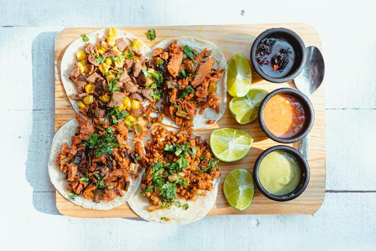

Tacos

Description
Tacos are a dish made out of a flour or corn tortillia folded in half
and filled with meats, sauces, vegetables, cheese, and spices
Ingredients
- Tortillia
- Carne Asada
- Shredded Pepperjack Cheese
- Tomato
- Shredded Lettuce
- Hot Sauce
Steps
- Put the tortillia on a plate.
- Put the meat, sauce, cheese and veggies on the tortillia.
- Fold the tortillia in half.
- Put that taco in your face.
Home